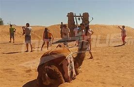
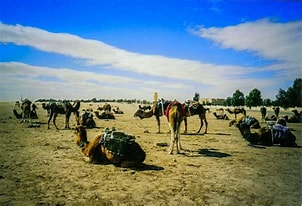
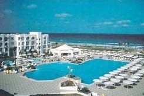

| Hotels | Restaurants | Location cars |
|  | Around Tataouine and Medenine, the desert appears in all its implacable ruggedness, the call of the sahara resonates all the sronger as modern life becomes more cramped and oppressive |
Sidi bou said is an exellent "base of opperations" for your trip to tunisia |
 |
|  | Couverte d'un fin manteau blanc tel un paysage enneigé, la région de Douz offre la plus douce des approches du désere |
Mahdia est une station balnéaire à taille humaine et ses plages comptent parmi les plus réputées de Tunisie Mahdia wikipédia |
 |